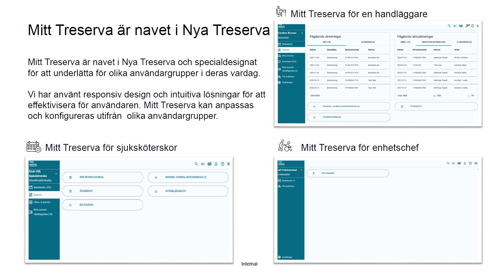
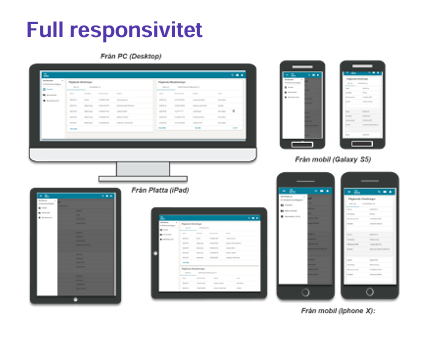

Vi går in i det moderna Treserva
Nu finns möjligheten att ta nästa steg mot ett mer modernt, tydligt och användarvänligt arbetssätt i Treserva. Med Mitt Treserva får handläggare ett processtöd i webben som guidar genom hela handläggningsprocessen på ett enklare och mer självinstruerande sätt.
Mitt Treserva

Processtöd för myndighetsutövning
Myndighetsprocessen inom äldreomsorgen får ett tydligt processtöd i ett användarvänligt webbgränssnitt. Användaren leds på ett enkelt och självinstruerande sätt genom handläggningsprocessens olika steg – från aktualisering till uppdrag.
Handläggaren får stöd att genomföra rätt aktivitet och registrering vid rätt tillfälle, vilket skapar bättre struktur, tydlighet och kvalitet i arbetet.
En sammanhängande och delvis automatiserad process
Den delvis automatiserade processen är uppdelad i flera delprocesser som är sömnlöst kopplade till varandra: aktualisering, IBIC- eller standardutredning samt beslut, insats och uppdrag.
Det innebär att användaren får ett mer sammanhängande arbetsflöde där systemet hjälper till att hålla ihop processen från start till avslut.
Aktualisering
Utifrån Treservas startsida i Mitt Treserva kan handläggaren registrera nya aktualiseringar och samtidigt få överblick över sina egna och enhetens pågående aktualiseringar.
Aktualiseringen är uppdelad i korta och enkla processteg där vissa steg är obligatoriska medan andra aktiveras utifrån tidigare registreringar. När en aktualisering avslutas och ska leda till utredning skapas automatiskt ett ärende, ett beslut om att inleda utredning, en journalanteckning samt en påbörjad utredningsprocess.
IBIC-utredning
IBIC-utredningen i Treserva följer Socialstyrelsens vägledning och ger ett tydligt stöd genom strukturerade processteg. Det gör att handläggningen blir mer enhetlig och lättare att följa.
Standardutredning
För de verksamheter som inte vill utreda enligt IBIC finns möjlighet att använda delprocessen Standardutredning. Den bygger på att kommunen använder egna beslutsunderlagsmallar utifrån lokala behov och önskemål.
Standardutredningen startar automatiskt när aktualiseringen avslutas och är, precis som övriga delprocesser, framtagen för att upplevas som enkel, tydlig och självinstruerande.
Beslut, insats och uppdrag
Delprocessen för beslut, insats och uppdrag startar automatiskt när någon av de två alternativa utredningsprocesserna avslutas. Även denna process är uppdelad i korta och tydliga steg där vissa moment är obligatoriska och andra styrs av tidigare registreringar.
Från det sista steget, uppdragsöversikten, får handläggaren en god överblick över både pågående och avslutade uppdrag och kan enkelt hantera förändringar, till exempel byte av utförare eller ändringar i uppdragsdokument.
Full responsivitet
Mitt Treserva har ett responsivt användargränssnitt som anpassar sig efter vilken enhet handläggaren arbetar på – smartphone, surfplatta eller dator. Det gör att systemet blir mer tillgängligt och flexibelt i vardagen, oavsett var arbetet utförs.
Den responsiva designen bidrar till ett modernare arbetssätt där användaren får samma tydliga stöd genom processerna, oavsett skärmstorlek eller enhet.
